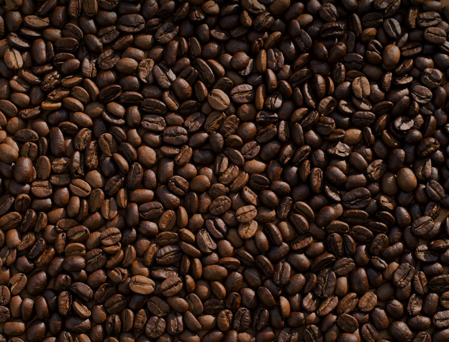
01
Cosecha y selección
Recolección a mano y selección grano a grano: solo pasa lo mejor del lote.

Café de finca · Cosecha propia
Cultivamos, tostamos y servimos un café con nombre y origen. Esta es la historia del grano, contada de la montaña a tu taza.
Conoce el origenCapítulo 01
Todo café tiene un lugar. El nuestro nace en montaña, entre niebla, sombra y paciencia.
Aquí va la historia real de la finca: dónde está, quién la trabaja, a qué altura crece el café y por qué eso importa. Los visitantes de una web agrícola quieren ver la tierra y conocer a la gente detrás del producto — este es el espacio para contarlo con fotos propias.
Las fotografías actuales son reales, de bancos de imágenes (Unsplash), y son provisionales hasta tener las de la finca.
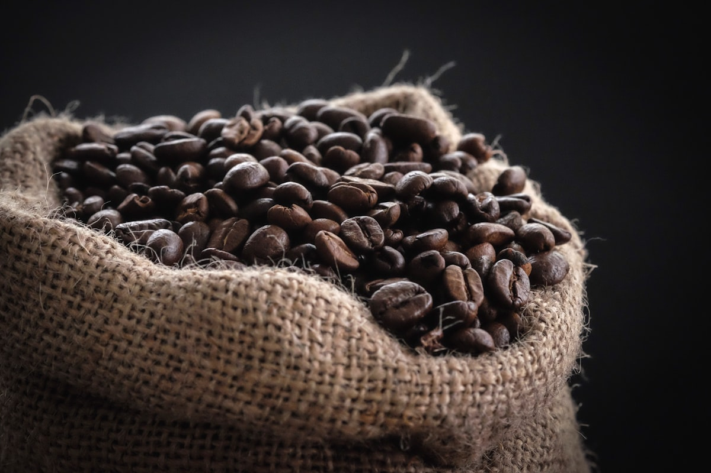
Capítulo 02

Recolección a mano y selección grano a grano: solo pasa lo mejor del lote.
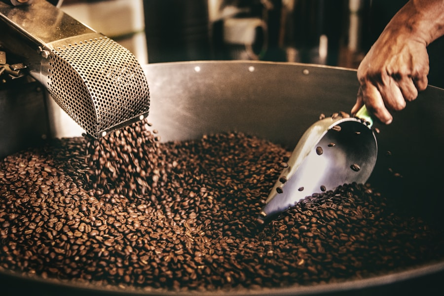
Tueste en lotes pequeños para desarrollar el perfil de cada cosecha.
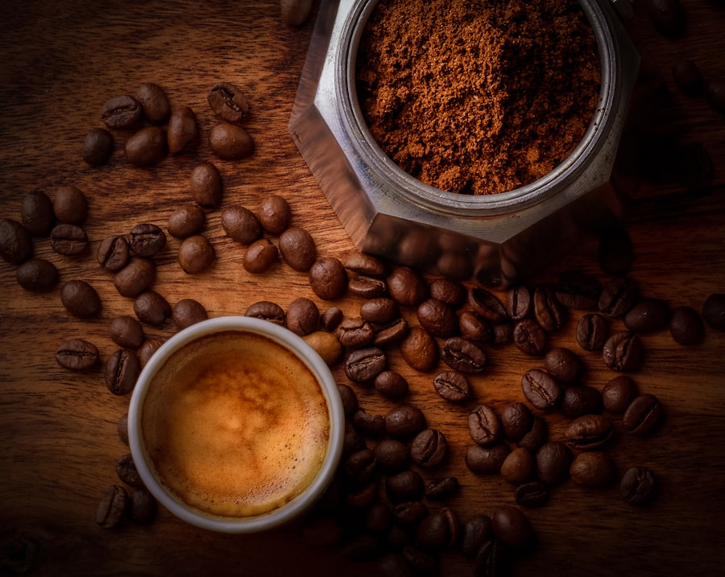
Molido al momento, ajustado al método: espresso, filtrado o prensa.
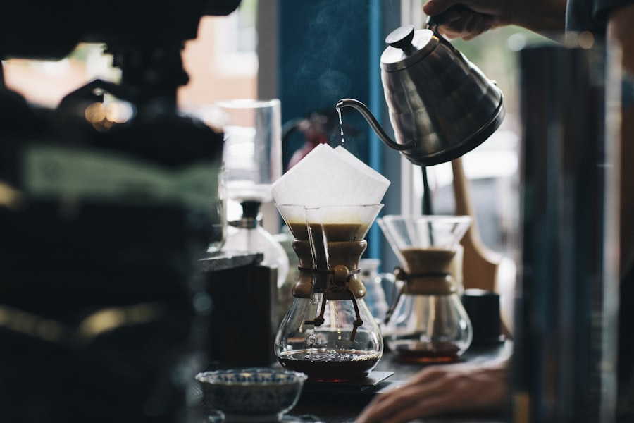
La última mano: agua, tiempo y técnica para servir la taza exacta.
“Una taza de café es un paisaje que se bebe.”
Capítulo 03
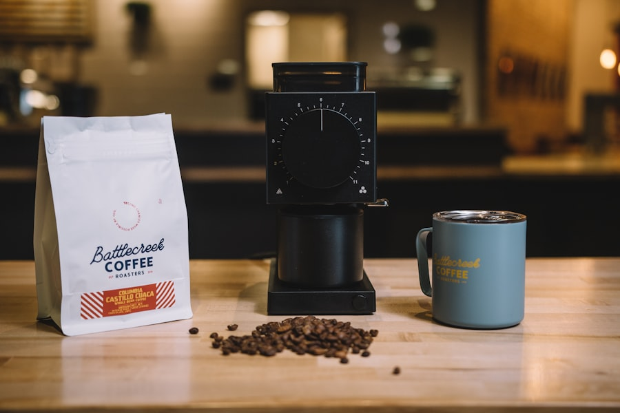
Nuestro perfil clásico: dulce, balanceado, de todos los días.
Grano · Molido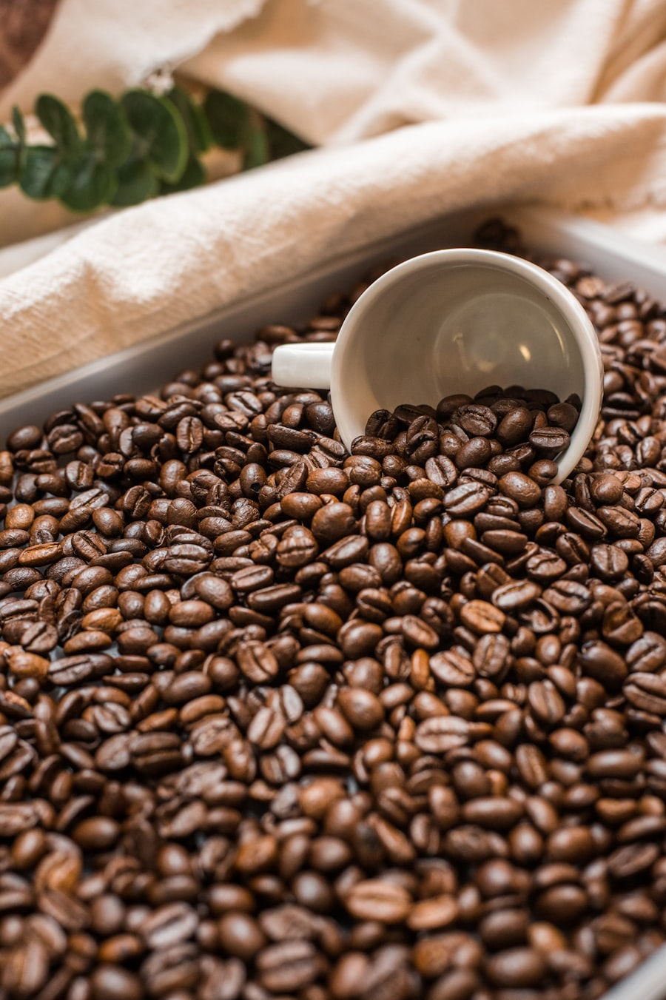
Ediciones limitadas por temporada, con notas de cada lote.
Edición limitada
Espresso, filtrados y bebidas de la casa, preparados al momento.
CafeteríaCapítulo 04
Notas y crónicas de la finca, la barra y la gente del café — una pequeña revista para leer con calma.
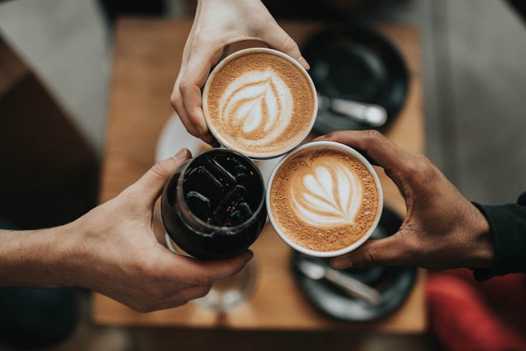
Por qué la mesa de una cafetería sigue siendo el mejor lugar para conversar.
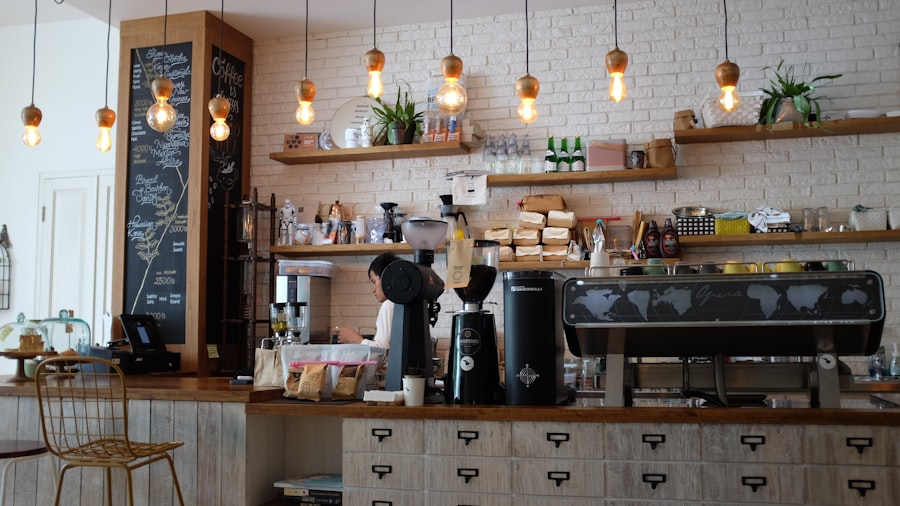
Lo que pasa entre el primer espresso de la mañana y el cierre.
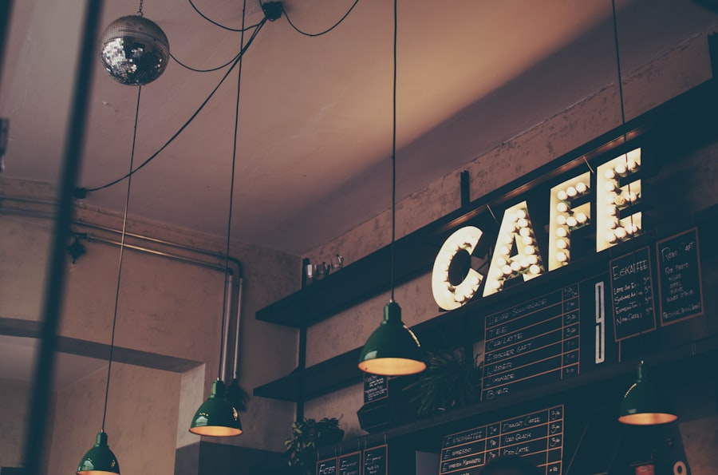
Los espacios que nos inspiran, aquí y en otras partes del mundo.
Capítulo 05
Ven a probar el café donde se cuenta su historia. Escríbenos para pedidos, visitas a la finca o simplemente para saludar.
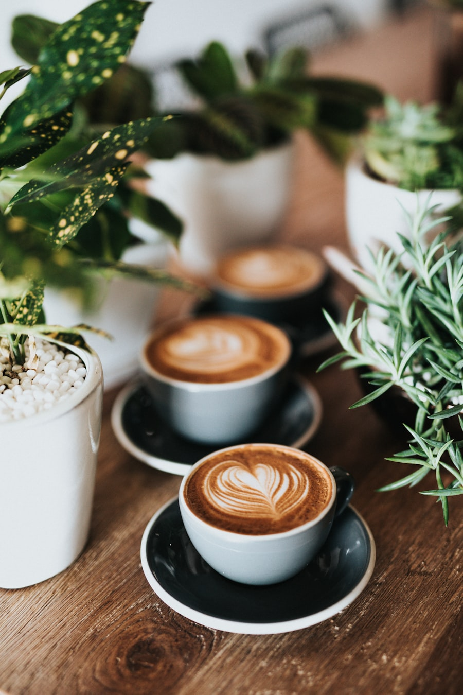